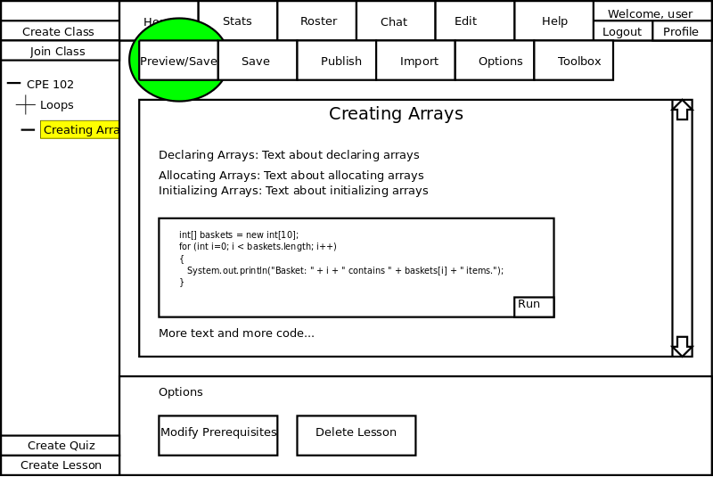

This scenario shows how the instructor can preview a lesson.
Previewing lessons is important because it allows the instructor to proofread the lesson and look at the layout of the lesson.
In this scenario, the instructor has just logged into the appropriate class and is looking at the lesson editor page.
Details of logging in as an instructor can be found in
Section 2.1.
To preview a lesson, the instructor selects the Preview/Save button on the toolbar in the lesson editor. The Preview/Save button saves the changes locally and then the CSTutor displays exactly what a student sees on a lesson page. The Preview/Save button does NOT publish the results for the class. Details of browsing the student pages can be found at
Section 2.4.
Figure 2.3.5-1 shows where the Preview/Save button is.

Figure 2.3.5-1: Preview Lesson.
The instructor can also preview a lesson by creating a dummy student, publishing a lesson, logging in as the dummy student, and selecting the lesson.